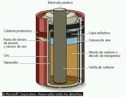

ELECTRICIDAD
Generar electricidad
El primero en conseguir una corriente eléctrica continua fue Alessandro Volta (1745-1827), un físico italiano que construyo la primera pila.
La Pila.
Se genera electricidad de forma natural cuando dos metales diferentes denominados electrodos se sumergen en un líquido conductor (agua salada, un ácido,...) llamado electrolito.

Células fotovoltaicas.
Las células fotovoltaicas contienen dos tipos de silicio distinto. El de arriba, al darle la luz del sol libera electrones que pasan al de abajo. Uniendo ambos silicios, se consigue una corriente eléctrica continua, ya que actúan como una pila.
Como el voltaje de cada célula es muy pequeño, se unen muchas en serie formando un panel.
Se utiliza en satélites, calculadoras y en general donde no llegan los tendidos eléctricos.
Electromagnetismo.
Los imanes son piezas metálicas que pueden atraer a ciertos metales. Siempre tienen dos polos, llamados norte y sur. Los polos de distinto nombre se atraen, y los del mismo nombre se repelen.
Un electroimán es una bobina eléctrica enrollada en torno a una barra alargada de un material ferroso.
El efecto magnético del electroimán solo se manifiesta cuando circula corriente por la bobina. Por lo tanto se puede activar y desactivar cuando se desee; y además, si se invierte el sentido de la corriente, los polos del electroimán también se invierten.
El electroimán es un mecanismo electromagnético, es decir, su funcionamiento está basado en la interacción existente entre la electricidad y el magnetismo.
El científico inglés Michael Faraday, descubrió que moviendo un imán ante un cable, se generaba electricidad. Esto es lo que ocurre en el caso de las dinamos y los generadores.
El científico inglés Michael Faraday, descubrió que moviendo un imán ante un cable, se generaba electricidad. Esto es lo que ocurre en el caso de las dinamos y los generadores.
Obra publicada con Licencia Creative Commons Reconocimiento Sin obra derivada 4.0